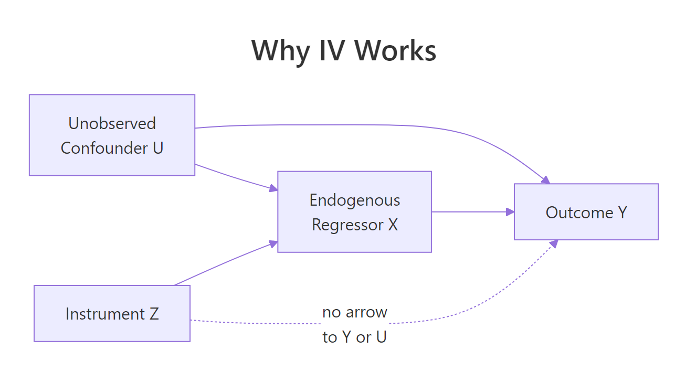
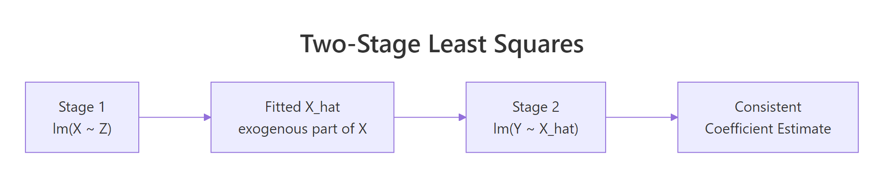

Instrumental Variables in R: ivreg Package & Two-Stage Least Squares
Instrumental variables (IV) regression is a method for estimating causal effects when a predictor is correlated with the error term, a problem called endogeneity that biases ordinary least squares. The ivreg package in R runs two-stage least squares (2SLS) to fix it, producing consistent estimates plus weak-instrument, Wu-Hausman, and Sargan diagnostics in one call.
When does OLS fail and IV rescue it?
The clearest way to see why IV matters is to build a scenario where you already know the truth, then watch OLS miss it. Suppose wages depend on schooling, but both wages and schooling also depend on unobserved ability. That hidden third variable biases the OLS slope on schooling, so you cannot tell causation from correlation. An instrument, a variable that affects schooling but nothing else in the equation, restores identification. Let's simulate this exact setup and compare OLS against ivreg() side by side.
The true causal slope is 2. OLS reports 2.57, inflated by the confounder u, which pushes both x and y upward together. ivreg() returns 1.99, recovering the true effect. The pipe | in the formula is the IV syntax: regressors on the left, instruments on the right.
Try it: Triple the strength of the confounder by changing 1.5 * u to 4 * u in the y equation. Refit OLS and IV. The OLS slope should drift much further from 2 while the IV slope barely moves.
Click to reveal solution
Explanation: The bigger the confounder's influence, the more x and y move together for non-causal reasons, so OLS overshoots. IV only uses the part of x driven by z, which is uncorrelated with u, so it stays near the true value of 2.
What is the intuition behind two-stage least squares?
2SLS does in two steps what ivreg() does in one. First, it regresses the endogenous variable on the instrument and keeps the fitted values. That stripped-down version of x contains only the variation the instrument can explain, so it is uncorrelated with the confounder by construction. Second, it regresses the outcome on those fitted values. The slope you get is the consistent causal estimate.

Figure 1: The IV causal graph. The instrument Z affects Y only through X, so Z is uncorrelated with the confounder U.
The graph encodes the two assumptions that make 2SLS work: Z must drive X (the arrow Z → X), and Z must reach Y only through X (no direct arrow Z → Y, no arrow Z → U). Replacing X with its prediction from Z purges the U-driven contamination.
Manual 2SLS reproduces the ivreg() slope of 1.99 exactly. The two-step recipe is what is happening under the hood when you call ivreg().

Figure 2: 2SLS replaces the endogenous X with its projection onto the instrument, then runs the usual OLS.
You can write the estimator compactly. Let $X$ be the matrix of regressors and $Z$ the matrix of instruments. The 2SLS estimator is:
$$\hat{\beta}_{2SLS} = (X'P_Z X)^{-1} X'P_Z y$$
Where:
- $P_Z = Z(Z'Z)^{-1}Z'$ is the projection matrix onto the instrument space
- $X'P_Z X$ replaces $X'X$ from OLS with the instrument-projected version of the cross-product
- $X'P_Z y$ replaces $X'y$ similarly
If you do not care about the math, the manual code above is all you need to picture what 2SLS is doing. Skip ahead.
x_hat as observed data, but it was estimated, so the reported standard errors are too small. ivreg() corrects this and reports valid inference.Try it: Confirm by hand that coef(stage2)["x_hat"] equals coef(iv_fit)["x"] to the third decimal place.
Click to reveal solution
Explanation: The point estimate is mechanical. The two routes give identical coefficients. They diverge only on the standard errors, which ivreg() computes correctly.
How do you write the ivreg formula?
The ivreg() call uses a two-part formula separated by a pipe. To the left of the pipe go the regressors, including both exogenous and endogenous ones. To the right go the instruments, including the exogenous regressors again (any variable that does not need an instrument is its own instrument). A three-part form splits the two groups explicitly.
The price elasticity of demand is -1.14: a one percent rise in real price predicts a 1.14 percent drop in packs sold. Notice log(rincome) appears on both sides of the pipe because it is exogenous and acts as its own instrument.
Both forms produce identical coefficients. The three-part form is more explicit about which regressors are endogenous, which makes it easier to read with multiple endogenous variables.
Try it: Add cigtax as a second instrument alongside salestax. The model becomes overidentified.
Click to reveal solution
Explanation: With two instruments for one endogenous regressor, the model is overidentified and 2SLS uses the optimally-weighted combination. The elasticity is now -1.28, slightly larger in magnitude than the single-instrument estimate.
What do the diagnostic tests tell you?
summary() on an ivreg fit prints three extra tests OLS does not give you. The weak-instrument test asks whether your instrument actually moves the endogenous regressor (a small F-statistic here means your 2SLS estimate is unreliable). The Wu-Hausman test asks whether OLS and 2SLS disagree enough to justify using IV at all. The Sargan test, only for overidentified models, asks whether your instruments are mutually consistent with the exogeneity assumption.
Three lines, three different questions:
| Test | What it asks | Decision rule (rough) |
|---|---|---|
| Weak instruments | Does the instrument move the endogenous regressor enough? | F > 10 means strong; here F = 45 is fine |
| Wu-Hausman | Are OLS and 2SLS estimates significantly different? | Small p means OLS is biased and IV is needed; p = 0.30 means the data does not flag endogeneity strongly |
| Sargan | When overidentified, do all instruments agree? | NA here because the model is just-identified (one instrument for one endogenous regressor) |
The weak-instrument F of 45 is well above the rule-of-thumb threshold of 10, so salestax is a strong instrument for log(rprice). The Wu-Hausman p-value of 0.30 means the data alone cannot conclusively reject OLS, but theory says cigarette price is endogenous, so IV is still the defensible choice. Sargan is NA because there is one instrument for one endogenous regressor, so the validity assumption cannot be checked from the data.
Try it: Refit with two instruments (salestax + cigtax) for one endogenous regressor and read the Sargan test. A high p-value (above 0.10) supports that both instruments are valid.
Click to reveal solution
Explanation: The Sargan p-value of 0.27 is comfortably above 0.10, so we fail to reject the joint exogeneity of salestax and cigtax. Both instruments are statistically consistent with each other.
How do you choose a valid instrument?
Two rules decide whether a candidate instrument is valid. Relevance means the instrument must actually predict the endogenous regressor, check the first-stage F-statistic (rule of thumb: above 10). Exogeneity means the instrument must affect the outcome only through the endogenous regressor, this is an assumption, not a test, and it has to come from subject-matter logic. Classic examples: distance to college for schooling, rainfall for crop prices, quarter of birth for education.
The F-statistic of 64.66 is far above 10, confirming salestax is a strong instrument for log(rprice). This first-stage F is what the diagnostic block summarizes when it says "Weak instruments F = 45" (different scaling, same idea).
Try it: Replace salestax with rnorm(nrow(CigaretteDemand)), a random noise variable, and recompute the first-stage F. It should collapse near 1.
Click to reveal solution
Explanation: Noise has no relationship with log(rprice), so the first-stage F drops to 0.07 and the p-value is 0.79. Using this as an instrument would produce a 2SLS estimate driven entirely by sampling noise.
Practice Exercises
Exercise 1: Diagnose and fix an endogenous model
Simulate n = 800 observations with u <- rnorm(n), z <- rnorm(n), x <- 0.5*z + 0.8*u + rnorm(n), y <- 1.5*x + 2*u + rnorm(n). Fit OLS and ivreg(). Then read the weak-instrument test and Wu-Hausman test from summary(..., diagnostics = TRUE). Decide whether IV is justified.
Click to reveal solution
Decision: Weak-instrument F = 298 is strong, Wu-Hausman p = 4e-51 is essentially zero, OLS is biased upward to 2.58 while IV recovers the true slope of 1.5. IV is clearly justified.
Exercise 2: Reproduce ivreg with two manual lm calls
Using the simulated data from the first H2 (sim data frame with y, x, z), run Stage 1 and Stage 2 by hand and compare the slope to iv_fit. Then explain in one sentence why the standard errors differ.
Click to reveal solution
Explanation: Coefficients match exactly. The manual standard error is too small because Stage 2 treats x_hat as observed; ivreg() adjusts for the fact that x_hat was estimated in Stage 1. Always trust ivreg() for inference.
Exercise 3: Pick the better of two instrument sets
Using CigaretteDemand, fit two ivreg models for log(rprice): one using salestax only, the other using cigtax only. Compare the weak-instrument F and the price elasticity. Which instrument is more credible?
Click to reveal solution
Decision: Both elasticities are negative and similar in magnitude. cigtax has a larger weak-instrument F (118 vs 45), so the first stage is stronger. Either instrument is defensible by the F threshold; pairing them as in the overidentified model lets you formally test their consistency with Sargan.
Complete Example
End-to-end on CigaretteDemand: spot endogeneity, pick instruments, fit, diagnose, interpret.
Interpretation: The IV elasticity is -1.28, statistically distinct from OLS's -1.34 but not dramatically so. Both instruments pass the weak-instrument test (F = 245), the Sargan p-value of 0.27 says they are mutually consistent with exogeneity, and the Wu-Hausman p of 0.087 is borderline. With a 95% confidence interval of [-1.55, -1.01], the demand for cigarettes is elastic: a 10 percent price increase is estimated to drop sales by roughly 13 percent.
Summary
| Concept | R function or call | When to use | |||
|---|---|---|---|---|---|
| Endogeneity check | ivreg() + summary(., diagnostics = TRUE) |
Any time a regressor might correlate with the error | |||
| 2SLS estimation | `ivreg(y ~ X | Z) or ivreg(y ~ exog |
endo | inst)` | Causal effect with at least one valid instrument |
| First-stage F | anova() of nested lm() or weak-instrument row in diagnostics |
Verify instrument relevance (rule: F > 10) | |||
| Wu-Hausman | diagnostics["Wu-Hausman", ] |
Decide whether 2SLS differs from OLS enough to matter | |||
| Sargan | diagnostics["Sargan", ] |
Test consistency across instruments (overidentified models only) | |||
| Manual 2SLS | Two lm() calls (Stage 1 then Stage 2) |
Pedagogy only, never for reporting standard errors |
The full reasoning chain is: confirm an instrument is relevant via the first-stage F, defend its exogeneity by argument, fit ivreg(), read the diagnostics, and report the IV coefficient with its proper standard error and confidence interval.
References
- Kleiber, C. & Zeileis, A., ivreg: Two-Stage Least-Squares Regression with Diagnostics. CRAN vignette (2025). Link
- Stock, J. & Watson, M., Introduction to Econometrics. 4th ed., Pearson (2020). Chapter 12 on instrumental variables.
- Wooldridge, J., Introductory Econometrics: A Modern Approach. 7th ed., Cengage (2020). Chapter 15.
- Angrist, J. & Pischke, J-S., Mostly Harmless Econometrics. Princeton University Press (2009). Chapter 4.
- Hanck, C., Arnold, M., Gerber, A. & Schmelzer, M., Introduction to Econometrics with R. Chapter 12. Link
- Fox, J., Kleiber, C. & Zeileis, A., ivreg package reference manual. Link
- Staiger, D. & Stock, J., Instrumental Variables Regression with Weak Instruments. Econometrica 65(3):557-586 (1997).
- R Core Team,
formulahelp page documenting the|operator. Link
Continue Learning
- Multiple Regression in R, the parent topic: how OLS handles multiple predictors before you reach for IV.
- Linear Regression Assumptions in R, where endogeneity sits inside the "exogenous regressors" assumption and this post covers the four others.
- Regression Diagnostics in R, the broader toolkit for spotting model problems that IV can or cannot fix.